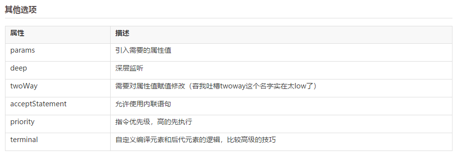
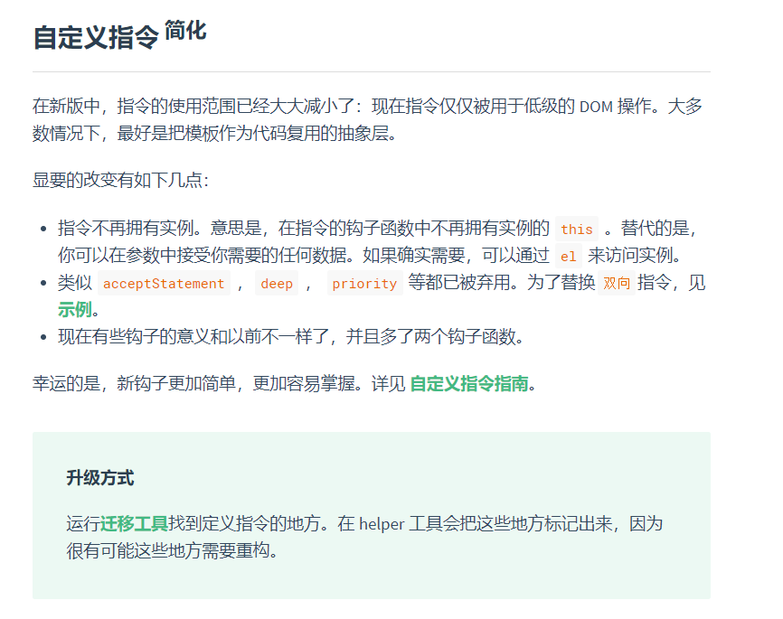
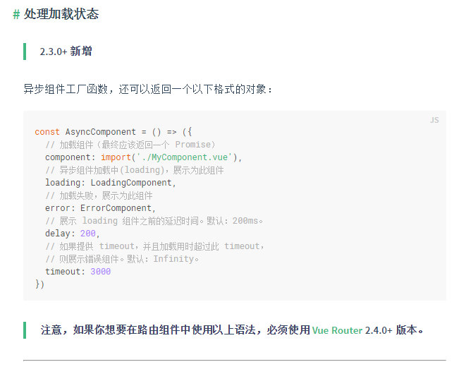

teriminal
设置terminal:true。Vue 通过递归遍历 DOM 树来编译模块。但是当它遇到 terminal 指令时会停止遍历这个元素的后代元素。这个指令将接管编译这个元素及其后代元素的任务。v-if 和 v-for 都是 terminal 指令。
1 | directives: { |
先停下，我看的1.0 好像在2.0不需要了，我要去看看vue渲染是怎么渲染的 ，还是说1.0才有这种情况
vue 渲染过程(拆)
我觉得延迟渲染的目的不是为了异步加载页面，我相信这些vue-loader都是帮我处理好的东西。
所以如果某些情况下，需要某个组件延迟加载，这就有用了。
所以我们需要的是下面这个，这样就够了。